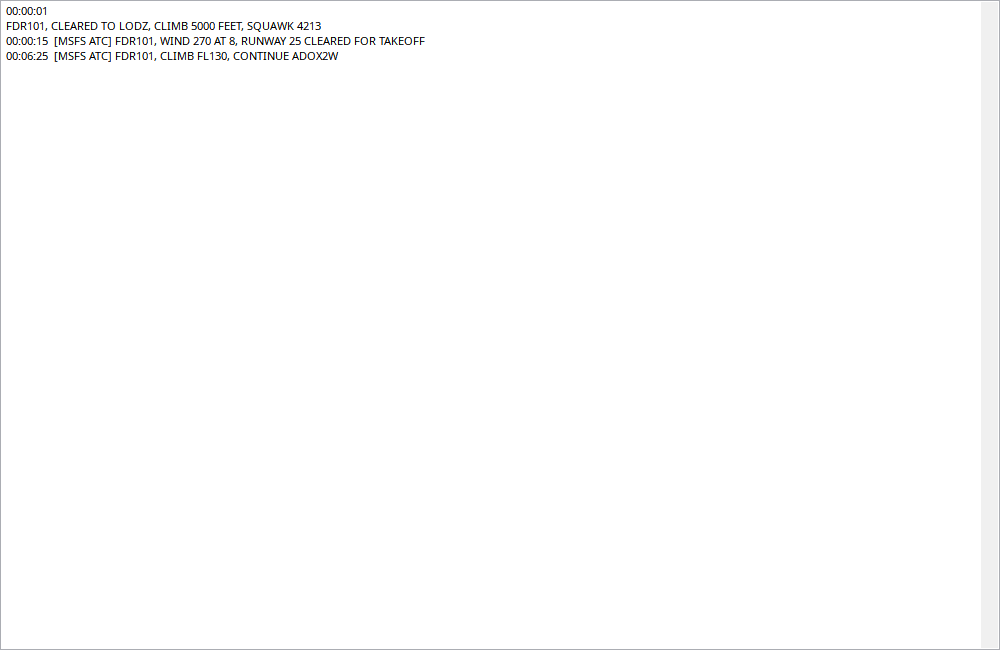

Das Register enthält Gesprächshistorie, die Zeitleiste zeigt die letzte passende Nachricht etwa 30 Aufnahmesekunden. Rückspulen sendet nichts. FSHud und MSFS ATC sind getrennte Quellen. Freigabe-/Höhenvariablen sind Zustand, kein Gespräch. Frequenz allein rekonstruiert keinen fehlenden Text.
Historische Nachrichten; FSHud und MSFS-ATC sind getrennte Quellen.
| Option / Aktion | Verhalten und Einschränkungen |
|---|---|
| Verlauf | Zeit, vorhandene Frequenz/Rufzeichen und Text; Wiedergabe sendet keinen Funkspruch. |
| MSFS | Optionaler Bridge-Listener liefert Text, wenn verfügbar. Standard-Freigabe-/Pisten-/Agent-/COM-Werte allein sind kein Transkript. |
| FSHud | Benötigt laufende unterstützte Schnittstelle während der Aufnahme. Frequenz allein rekonstruiert keine Sprache. |
| Zeitzeile | Letzte passende Nachricht etwa 30 Aufnahme-Sekunden am Schieber; Gesamthistorie im Tab. |
| Fehlend | Fehlende Schnittstelle beweist weder Funkstille noch verweigerte Freigabe. |
